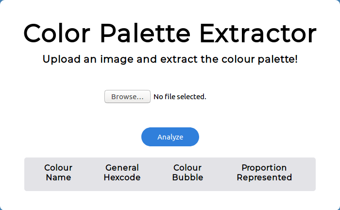

Bio
My name’s Josh. I currently work as a data scientist at Best Buy Canada where we’re trying to improve our fulfillment and logisitics operations with machine learning products.
I’ve had the privilege of doing a lot of different things over the course of the last five years from working at non-profits, large businesses, tiny startups, in the government and on political campaigns. I absolutely love learning and trying new things.
Work Experience
Data Scientist, Best Buy Canada
Burnaby, BC - March, 2020 - Present
Data Scientist Intern, Best Buy Canada
Burnaby, BC - May, 2019 - August, 2019
Data Analyst, Strategic Insights Unit, Destination Ontario
Toronto, ON - June, 2018 - August, 2018
Data Scientist, Digital Team, Ontario Liberal Party
Toronto, ON - January, 2018 - June, 2018
Research Analyst Intern, Ministry of Training, Colleges & Universities
Toronto, ON - May, 2017 - August, 2017
Marketing Data Analyst, Cabinet Office
Toronto, ON - January 2016 - December, 2016
Accounts Receivable Summer Intern, Toronto Hydro
Toronto, ON - May, 2015 - August, 2015
Research Experience & Projects
In the Blink of an Eye: Reading Mental States From Briefly Presented Eye Regions
Gunnar Schmidtmann, Andrew Logan, Claus-Christian Carbon, Joshua T. Loong, Ian Gold. I—Percetion, doi: 10.1177/2041669520961116
Improving random feedback alignment with transfer learning
Joshua T. Loong, Andrej Kukuruzovic, Gabi Kim, Eric Hunsberger, SYDE 552 Final Course Project, Report
Volunteer Experience
Data Pillar Lead. Future of Engagement
Toronto, ON - June, 2021 - Present
VP of Technology, University of Waterloo Data Science Club
Waterloo, ON - January 2019 - April, 2019
Co-Founder, Chalmers Cards
Toronto, ON - January, 2018 - September, 2018
Tech Lead, Democracy Kit, Open Democracy Project
Toronto Chapter Exec, Democracy Kit, Open Democracy Project
Toronto, ON - June, 2017 - September, 2018
Talks, Competitions & Hackathons
- Quick & Easy Pickup Experiment - Vancouver Analytics Industry Forum (2020)
- Mapping Community Benefits in Parkdale - Code Across Toronto (2018)
- Campaign Technology Training - Democracy Kit Campaign School (2018)
- The Power of Analytics - LearnON Social Media Bootcamp (2016)
- Sustainable Business Practices for Chalk.com - Fusion Conference (2015)
Education
Honours Bachelors of Science
Science and Business
University of Waterloo, Waterloo, ON - Sept, 2014 - December, 2019
Side Projects
My Github contributions over the last year:
| Description | Picture |
|---|---|
| Created a toy LSTM text generation model based on Canadian federal parliamentary debates. | |
| Conduct topic modeling on a corpus of song lyrics to find genre differences using Latent Dirichlet Allocation. |  |
| Built the first Python module for computing Chow Break tests to measure structural breaks in time series data. | |
| Made a tiny package that wraps around Pandas to encode continuous variables into binned binary features. |  |
| Developed git-status-size a custom git utility to track the file sizes of new repo changes and allow users to add files to their .gitignore. |  |
| Created a Python based recovery system for markdown files from a Hexo static site. | |
| Currently building a web demo of Google’s sg2im neural network to build photorealistic images from scene graphs using React.js and Flask. | |
| Wrote a Python based command line utility for conducting Needleman-Wunsch protein or nucleotide sequence alignment |  |
| As part of Code Across Toronto 2018 I was part of a small team that built an experiment in participatory democracy for Toronto’s Parkdale neighbourhood. |  |
| Contributer to Timeliny a jQuery plugin for building interactive web timelines. I mainly contributed navigation features to the library. |  |
| Created a Flask web app to allow users to extract colour palettes contained within photos. |  |
| Used open data from the city of Toronto to create an interactive map visualizing the city’s shelter locations and their capacity. | |
| Using Mapbox.js and a (now-deprecated) Job Bank API, allowed users to visualize the locations of employment opportunities posted to the federal job board. | |
| Created a Flask web app to let users join pdf documents together. |
Contract Projects
- Business Plan Editing - Dan Liu Design (2017)
- Digital Analytics & Ad Planning - MyGica (2016)
Writing Projects
- Personal Blog - (2017 - present)
- The Never Ending Reader - (2016 - 2017)
- BykMe Blog - (2015 - 2016)